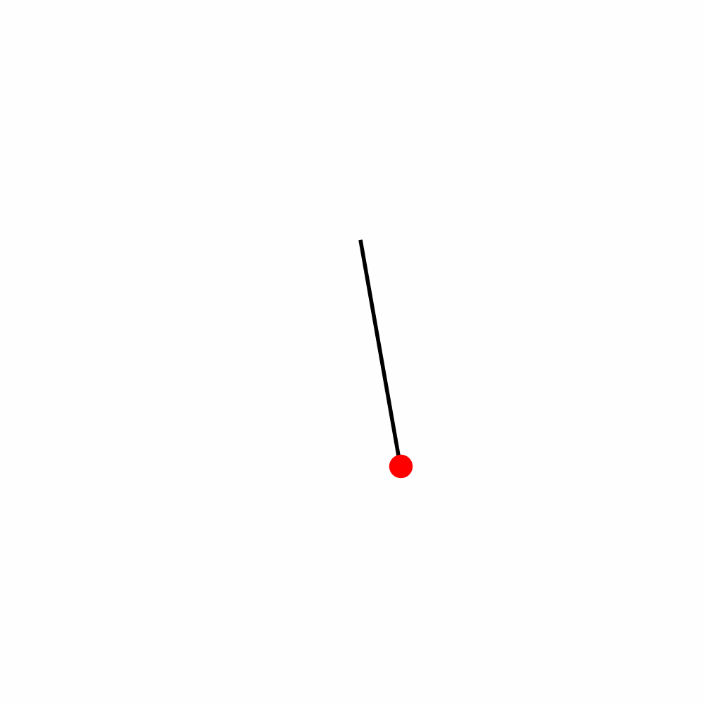

Problem 1
Measuring Earth's Gravitational Acceleration with a Pendulum
Motivation
The gravitational acceleration \(g\) is a key physical constant. Measuring it using a simple pendulum provides a practical approach to understanding experimental physics, wave motion, and the effect of uncertainties in measurements.
Materials
- String: \(L = 1.00 \pm 0.005\) m (Ruler resolution = 1 mm)
- Mass: Key chain
- Stopwatch: Smartphone with \(\pm 0.01\) s precision
- Measuring tape (for string length)

Data Collection
- Measured Length: \(L = 1.00\) m
- Uncertainty: \(\Delta L = 0.005\) m
10 Oscillations (\(T_{10}\)) (Measurements (seconds)):
20.10, 20.03, 20.09, 20.12, 20.06, 20.04, 20.07, 20.08, 20.01, 20.11
Calculated Values
- Mean \(T_{10} = \overline{T_{10}} = 20.071\) s -- * Standard deviation \(\sigma_T = 0.038\) s --
- Uncertainty in mean \(\Delta T_{10} = \frac{\sigma_T}{\sqrt{10}} = 0.012\) s
Calculations
1. Period and Uncertainty
\[
T = \frac{\overline{T_{10}}}{10} = 2.0071 \text{ s}, \quad \Delta T = \frac{\Delta T_{10}}{10} = 0.0012 \text{ s}
\]
2. Gravity Estimation
\[
g = \frac{4\pi^2 L}{T^2} = \frac{4\pi^2 \times 1.00}{(2.0071)^2} = 9.81 \text{ m/s}^2
\]
3. Uncertainty Propagation
\[
\Delta g = g \sqrt{\left( \frac{\Delta L}{L} \right)^2 + \left( 2 \cdot \frac{\Delta T}{T} \right)^2} =
9.81 \sqrt{\left( \frac{0.005}{1.00} \right)^2 + \left( 2 \cdot \frac{0.0012}{2.0071} \right)^2} \\
\Delta g \approx 0.050 \text{ m/s}^2
\]
Final Results
| Quantity | Value |
|---|---|
| Length (L) | 1.00 m |
| Uncertainty (\(\Delta L\)) | 0.005 m |
| Mean \(T_{10}\) | 20.071 s |
| Std Dev (\(\sigma_T\)) | 0.038 s |
| Uncertainty \(\Delta T_{10}\) | 0.012 s |
| Period (T) | 2.0071 s |
| Uncertainty (\(\Delta T\)) | 0.0012 s |
| Calculated \(g\) | 9.81 m/s² |
| Uncertainty (\(\Delta g\)) | 0.05 m/s² |
Discussion
- Effect of \(\Delta L\): A 1 mm resolution results in 0.5 cm uncertainty, significant for short lengths.
- Effect of \(\Delta T\): Human reaction time and timer resolution contribute to variability, impacting \(\Delta T\).
-
Assumptions:
-
Small angle approximation (\(\theta < 15^\circ\))
- Negligible air resistance and massless string
- Comparison with Standard: Measured \(g = 9.81 \pm 0.05\) m/s² closely matches accepted value (9.80665 m/s²).
This experiment reinforces the importance of precision and error analysis in physical measurements and highlights the robustness of simple harmonic motion principles in determining fundamental constants.